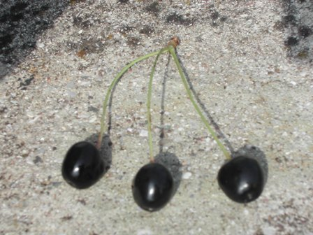
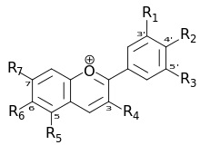

Ho vicino a casa ancora qualche ciliegio di quelle antiche qualità che mio nonno piantò molti decenni fa; purtroppo molte piante non sono sopravvissute alla terribile estate del 2003, quando il calore tropicale e la siccità fecero strage di alberi da frutto nella mia zona, ma ne rimane tuttavia ancora qualcuna.
Quella che presento è una delle residue specie di ciliege "selvatiche", non coltivate per il frutto e del tutto in via di estinzione: morta questa pianta... addio per sempre, non saprei proprio dove reperire la particolare qualità.
Una volta erano abbastanza diffuse e può darsi che in qualche località lo siano ancora.

Si tratta di una ciliegia molto piccola, di forma ovoidale e dal lunghissimo gambo; a maturazione assume un colore praticamente nero ed il sapore è dolcissimo, una vera ghiottoneria per gli uccelli (o almeno lo era quando gli uccelli riempivano il cielo...).

Schiacciata fra le dita rilascia un succo estremamente colorante e persistente e la pelle rimane macchiata per molto tempo.
Dopo averne raccolte un po' sembra di aver giocato a far la sintesi di qualche diazocomposto, e raramente ho visto qualcosa di simile in un frutto.
Naturalmente non hanno mai avuto alcun valore commerciale date le piccole dimensioni e le caratteristiche del frutto, assai tenero e delicato al contatto.
Anche la raccolta costuirebbe un problema insormontabile e sarebbe del tutto antieconomica.
Queste ciliegine, che non trovo in alcuna immagine di Google, rimangono quindi una pura curiosità botanica, della quale varietà mi piacerebbe conoscere il nome scientifico.
Ho titolato "una miniera di antociani" perchè questi numerosi composti glicosidici (ved.) sono i coloranti naturali dei fiori e dei frutti e si basano su questa molecola:

Sostituendo variamente gli -R con idrogeno -H, ossidrile -OH e metossile -OCH3, si hanno i coloranti specifici e i polifenoli per le specie vegetali interessate.
Un paio di gocce di succo bastano a colorare decisamente una intera provetta d'acqua, vista la quantità industriale di antocianine presenti in questi antichi frutti.
Questi coloranti sono degli indicatori sensibili al pH... e naturalmente l'ho verificato trasformando in tornasole un paio di gocce di succo delle ciliege di mio nonno.
In ambiente neutro il colore è violetto, in ambiente acido rosso chiaro e in quello alcalino blù, tutto secondo le aspettative.
Dicono che gli antociani abbiano ottime proprietà antiossidanti e in definitiva facciano bene... beh allora oggi, dopo la raccolta, mi hanno fatto decisamente bene, e "dentro" devo essere colorato come una boccetta d'inchiostro.